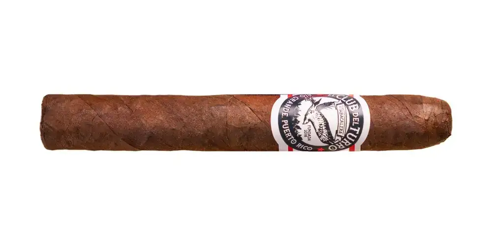

El Turrito
De El Club del Turro · Río Grande, Puerto Rico
Capote dominicano; tripa San Andrés y Corojo de Puerto Rico. Hecho a mano en PR.
- Capa: HVA (Habana Vuelta Abajo)
- Fortaleza: Suave
- Vitolas: Petit Corona 4" x 37
Fuentes: 1
Ver El Turrito en la app, califícalo y guárdalo en Mi Hoja.